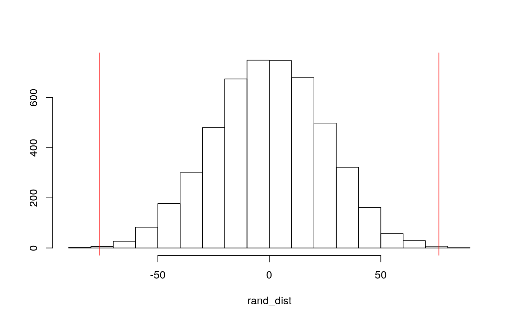
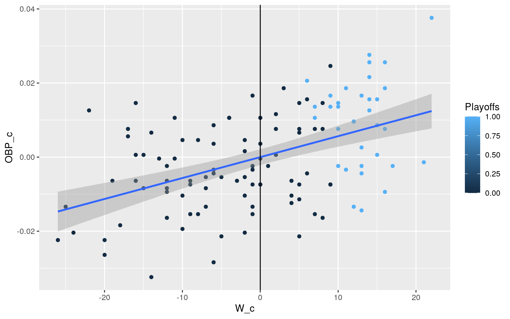
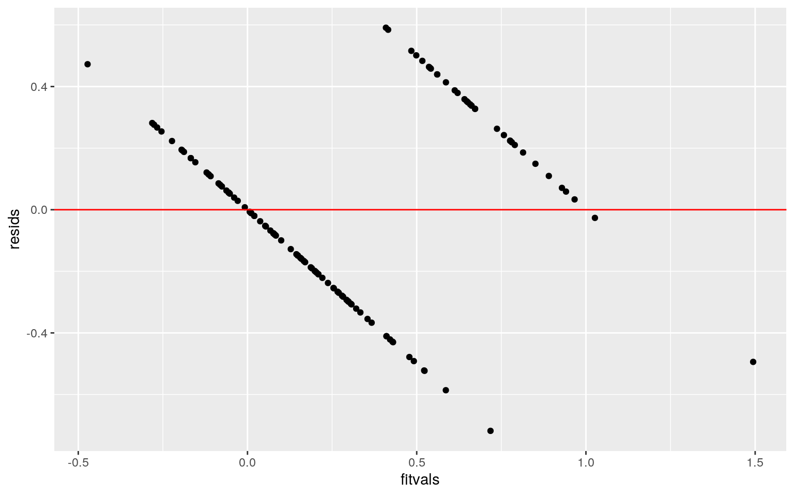
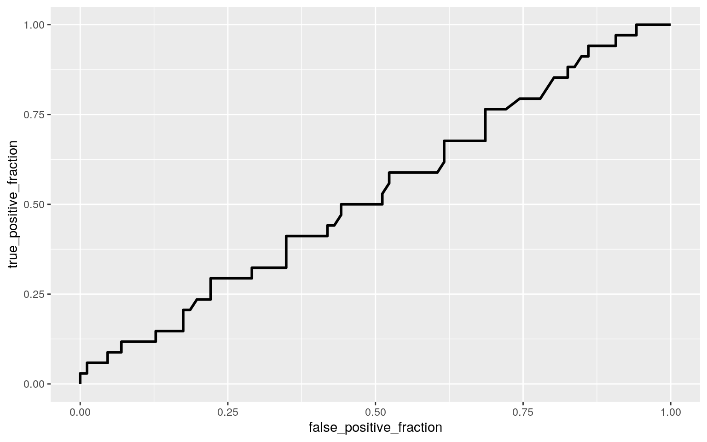
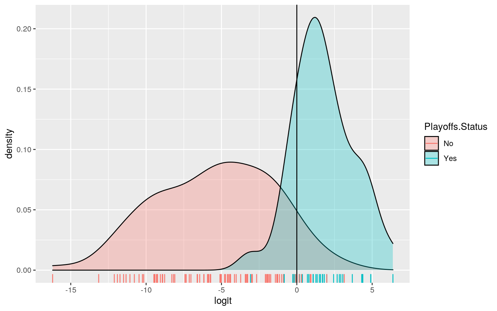

A knitted R Markdown document (preferably HTML) and the raw R Markdown file (as .Rmd) should both be submitted to Canvas by 11:59pm on the due date. These two documents will be graded jointly, so they must be consistent (i.e., don’t change the R Markdown file without also updating the knitted document). In the .Rmd file for Project 2, you can copy the first code-chunk into your project .Rmd file to get better formatting. Notice that you can adjust the opts_chunk$set(…) above to set certain parameters if necessary to make the knitting cleaner (you can globally set the size of all plots, etc). You can copy the set-up chunk in Project2.Rmd: I have gone ahead and set a few for you (such as disabling warnings and package-loading messges when knitting)!
Like before, I envision your written text forming something of a narrative structure around your code/output. All results presented must have corresponding code. Any answers/results/plots etc. given without the corresponding R code that generated the result will not be graded. Furthermore, all code contained in our project document should work properly. Please do not include any extraneous code or code which produces error messages. (Code which produces warnings is fine as long as you understand what the warnings mean.)
Find one dataset with at least 5 variables (ideally more!) that you want to use to build models/test hypotheses. At least one should be categorical (with 2-5 groups, ideally; definitely fewer than 10) and at least two should be numeric (taking on more than 10 distinct values). Ideally, at least of your variables will be binary (if not, you will have to create one by discretizing a numeric or collapsing levels of a categorical). You will need a minimum of 40 observations (at least 10 observations for every explanatory variable you have, ideally 20+ observations/variable).
It is perfectly fine to use either dataset (or the merged dataset, or a subset of your variables) from Project 1. However, I might encourage you to diversify things a bit and choose a different dataset to work with (particularly if the variables did not reveal interesting associations in Project 1 that you want to follow up with). The only requirement/restriction is that you may not use data from any examples we have done in class or lab. It would be a good idea to pick more cohesive data this time around (i.e., variables that you actually thing might have a relationship you would want to test). Think more along the lines of your Biostats project.
Again, you can use data from anywhere you want (see bottom for resources)! If you want a quick way to see whether a built-in (R) dataset has binary and/or character (i.e., categorical) variables, check out this list: https://vincentarelbundock.github.io/Rdatasets/datasets.html.
For my project, I decided to use a dataset including sabermetrics from all 30 MLB teams from 2009 to 2012. Sabermetrics is an extremely popular subject within baseball and statistical communities, and there is extensive data collected during baseball games. There are 120 observations for each variable, as the data is collected over four years for 30 teams. The first variable is Team, with 30 unique observations. League is a binary categorical variable, clarifying whether the team is in the National League (NL) or American League (AL), so there are two unique observations. Year is a categorical variable to indicate which season the observation is referring to; there are four unique observations, ranging from 2009 to 2012. There are six other numerical variables in my dataset, all having 120 total observations each. Runs scored (RS) refers to the number of runs scored for each team over a season. Runs allowed (RA) refers to the number of runs the team allowed their opponents to score over a season. Wins (W) refers to the number of wins for each team for each season. On-base percentage (OBS) refers to the percentage of time players reach base. Slugging percentage (SLG) refers to the total number of bases a player records per at-bat; it is similar to OBS but only considers the times base is reached from hits alone. Batting average (BA) is calculated by dividing a player’s hits by total at-bats. Most of these variables are usually measured and applied to one individual player, but this dataset will be looking at an entire team’s performance over an entire season. Playoffs is a binary categorical variable, indicating whether or not the team made it to playoffs that season. The final variable is Region; it is categorical and has six unique observations because there are three regions within each league - West, Central, and East.
man1 <- manova(cbind(RS, RA, W, OBP, SLG, BA) ~ Region, data = saber)
summary(man1)## Df Pillai approx F num Df den Df Pr(>F)
## Region 1 0.21282 5.0916 6 113 0.0001164 ***
## Residuals 118
## ---
## Signif. codes: 0 '***' 0.001 '**' 0.01 '*' 0.05 '.' 0.1
' ' 1summary.aov(man1)## Response RS :
## Df Sum Sq Mean Sq F value Pr(>F)
## Region 1 2525 2524.6 0.4427 0.5071
## Residuals 118 672913 5702.7
##
## Response RA :
## Df Sum Sq Mean Sq F value Pr(>F)
## Region 1 23913 23912.7 4.2657 0.04108 *
## Residuals 118 661493 5605.9
## ---
## Signif. codes: 0 '***' 0.001 '**' 0.01 '*' 0.05 '.' 0.1
' ' 1
##
## Response W :
## Df Sum Sq Mean Sq F value Pr(>F)
## Region 1 93.1 93.086 0.7265 0.3958
## Residuals 118 15119.9 128.135
##
## Response OBP :
## Df Sum Sq Mean Sq F value Pr(>F)
## Region 1 0.0000647 6.4715e-05 0.3608 0.5492
## Residuals 118 0.0211639 1.7935e-04
##
## Response SLG :
## Df Sum Sq Mean Sq F value Pr(>F)
## Region 1 0.000105 0.00010478 0.1533 0.6961
## Residuals 118 0.080664 0.00068359
##
## Response BA :
## Df Sum Sq Mean Sq F value Pr(>F)
## Region 1 0.0002129 0.00021294 1.6401 0.2028
## Residuals 118 0.0153205 0.00012983pairwise.t.test(saber$RA, saber$Region, p.adj = "none")##
## Pairwise comparisons using t tests with pooled SD
##
## data: saber$RA and saber$Region
##
## 1 2 3 4 5
## 2 0.0196 - - - -
## 3 0.2184 0.2606 - - -
## 4 0.3578 0.0013 0.0328 - -
## 5 0.6429 0.0595 0.4413 0.1678 -
## 6 0.3433 0.0012 0.0306 0.9774 0.1593
##
## P value adjustment method: none(1 - (0.95^37))## [1] 0.8501097(0.05/37)## [1] 0.001351351pairwise.t.test(saber$RA, saber$Region, p.adj = "bonferroni")##
## Pairwise comparisons using t tests with pooled SD
##
## data: saber$RA and saber$Region
##
## 1 2 3 4 5
## 2 0.293 - - - -
## 3 1.000 1.000 - - -
## 4 1.000 0.020 0.492 - -
## 5 1.000 0.893 1.000 1.000 -
## 6 1.000 0.018 0.459 1.000 1.000
##
## P value adjustment method: bonferroniThrough the MANOVA test, the overall p-value was found to be less than 0.05, at 0.0001164; therefore, it was significant. These results mean that at least one of the stats (RS, RA, W, OBP, SLG, BA) differs by region, a categorical variable. Individual ANOVAs were then carried out for each of the numerical stats to find the responses showing a mean difference across groups. The only ANOVA test that produced a p-value less than 0.05 was for RA compared to regions, so the null hypothesis for this test would be rejected. Next, a pairwise t-test was carried out to see exactly which region differs for significance in RA. In total, I performed 37 tests - one MANOVA, six ANOVAs, and 30 pairwise t-tests. If unadjusted, the probability of at least one type I error is 0.85, and 0.0013 was found to be the adjusted significance level. One MANOVA assumption that this data fails is the multivariate normality of DVs because there are not 25+ observations for all the variables, such as the binary categorical variables - Playoffs and League. It is likely that this data fails other MANOVA assumptions, perhaps including homogeneity of within-group covariance matrices; linear relationships among DVs; no extreme univariate or multivariate outliers; or no multicollinearity.
RARe <- saber %>% filter(Region==2 | Region==6)
rand_dist <- vector()
for (i in 1:5000) {
new <- data.frame(RA = sample(RARe$RA),
Region = RARe$Region)
rand_dist[i] <- mean(new[new$Region == "2",
]$RA) - mean(new[new$Region == "6",
]$RA)
}
RARe %>% group_by(Region) %>% summarize(means = mean(RA)) %>%
summarize(mean_diff = diff(means))## # A tibble: 1 x 1
## mean_diff
## <dbl>
## 1 -76.0mean(rand_dist > 76.05 | rand_dist < -76.05)## [1] 0.0014{hist(rand_dist,main="",ylab=""); abline(v = c(-76.05, 76.05),col="red")} I performed a randomization test for mean difference, looking at RA and Regions 2 and 6. I chose to investigate these variables because their p-values were found to be significant in the pairwise t-test from Part 1. The null hypothesis would be that the mean RA is the same for Region 2 vs. Region 6. The alternative hypothesis would be that mean RA is different for Region 2 vs. Region 6. After performing this test, the test-statistic (mean difference) was found to be -76.05. Due to the fact that the mean difference was quite large in magnitude, the association could be considered strong. However, a strong association can be caused by chance or by actual significance; the p-value can help determine which is the case. The p-value of 0.0014 is less than 0.05 and is therefore considered significant, so it can be concluded that the strong association found is not due to chance but is actually significant. Therefore, the null hypothesis is rejected, and it is evident that Region 2 and Region 6 have a significant difference in Runs Allowed (RA). By observing the plot visualization, it appears that the actual test statistic is large enough to suggest that the association is not due to chance, therefore confirming the results the numbers put forth.
3. (40 pts) Build a linear regression model predicting one of your response variables from at least 2 other variables, including their interaction. Mean-center any numeric variables involved in the interaction.
ggplot() using geom_smooth(method=“lm”). If your interaction is numeric by numeric, refer to code in the slides to make the plot or check out the interactions package, which makes this easier. If you have 3 or more predictors, just chose two of them to plot for convenience. (10)coeftest(..., vcov=vcovHC(...)). Discuss significance of results, including any changes from before/after robust SEs if applicable. (10)saber$W_c <- saber$W - mean(saber$W)
saber$OBP_c <- saber$OBP - mean(saber$OBP)
fit <- lm(Playoffs ~ W_c * OBP_c, data=saber)
summary(fit)##
## Call:
## lm(formula = Playoffs ~ W_c * OBP_c, data = saber)
##
## Residuals:
## Min 1Q Median 3Q Max
## -0.71805 -0.20940 -0.00936 0.22005 0.59101
##
## Coefficients:
## Estimate Std. Error t value Pr(>|t|)
## (Intercept) 0.239192 0.029228 8.184 3.99e-13 ***
## W_c 0.026915 0.002717 9.905 < 2e-16 ***
## OBP_c 4.055120 2.308214 1.757 0.08159 .
## W_c:OBP_c 0.616251 0.163523 3.769 0.00026 ***
## ---
## Signif. codes: 0 '***' 0.001 '**' 0.01 '*' 0.05 '.' 0.1
' ' 1
##
## Residual standard error: 0.2933 on 116 degrees of
freedom
## Multiple R-squared: 0.5903, Adjusted R-squared: 0.5797
## F-statistic: 55.72 on 3 and 116 DF, p-value: < 2.2e-16saber %>% select(Playoffs, W_c, OBP_c) %>% na.omit %>% ggplot(aes(W_c, OBP_c, color=Playoffs)) + geom_point() + geom_smooth(method="lm") + geom_vline(xintercept=mean(saber$W_c,na.rm=T,lty=2))
resids <- fit$residuals
fitvals <- fit$fitted.values
ggplot() + geom_point(aes(fitvals,resids)) + geom_hline(yintercept=0, color="red")
ks.test(resids, "pnorm", mean=0, sd(resids))##
## One-sample Kolmogorov-Smirnov test
##
## data: resids
## D = 0.04946, p-value = 0.9308
## alternative hypothesis: two-sidedcoeftest(fit, vcov = vcovHC(fit))##
## t test of coefficients:
##
## Estimate Std. Error t value Pr(>|t|)
## (Intercept) 0.2391923 0.0321152 7.4480 1.827e-11 ***
## W_c 0.0269146 0.0031055 8.6669 3.087e-14 ***
## OBP_c 4.0551197 2.6387835 1.5367 0.127081
## W_c:OBP_c 0.6162511 0.1997878 3.0845 0.002549 **
## ---
## Signif. codes: 0 '***' 0.001 '**' 0.01 '*' 0.05 '.' 0.1
' ' 1In this linear regression model, I observed the interaction between the number of wins (W) and OBP to predict whether a team made it to playoffs or not. By observing the coefficient estimates, several predictions can be made with this model and its data. At the mean OBP with the mean number of wins (W), the odds of a team making it to playoffs is 23.91%. If the mean number of wins increases by one at the mean for OBP, the odds of a team making it to playoffs increase by 2.69%. This small increase in the chances of making it to playoffs makes sense because having one extra win would not increase those odds greatly. If mean OBP increases by one at the mean number of wins, the odds of a team making it to playoffs increase by 405.51%. This large increase in the chances of making it to the playoffs makes sense because OBPs, on average, are usually ~0.320 and having an OBP greater than one is impossible which explains this astronomical increase in odds of making it to playoffs. The effect of the number of wins on the odds of a team making it to playoffs increases by 0.61 for every unit increase in OBP.
The R^2 value indicates that 59.03% of the variability in whether a team makes it to playoffs or not is explained by this model. After graphically checking assumptions of linearity, normality, and homoscedasticity, it appears that this model does not violate linearity because the response variable, Playoffs, is binary categorical which creates two data points and defines a straight line. By observing the points on the plot, it appears that this model does not violate homoscedasticity either because the points do not fan out. After performing the ks.test, the p-value was found to be greater than 0.05, at 0.9308, so normality is not violated. Finally, after recomputing the regression results with robust standard errors via the coeftest, it was determined that all the effects and interactions that were initially significant remained significant after this test was performed. This means that the effect of number of wins (W) on odds of making playoffs; the effect of OBP on odds of making playoffs; and the effect of the interaction between wins and OBP on the odds of making it to playoffs all remain significant.
samp_distn <- replicate(5000, {
boot_dat <- sample_frac(saber, replace=T)
fit2 <- lm(Playoffs ~ W_c * OBP_c, data=boot_dat)
coef(fit2)
})
samp_distn %>% t %>% as.data.frame %>% summarize_all(sd)## (Intercept) W_c OBP_c W_c:OBP_c
## 1 0.03110408 0.003056442 2.548441 0.1811146After rerunning the same regression model with the interaction and computing bootstrapped standard errors, there were changes in SEs and p-values in comparison to the original SEs and robust SEs. The new SEs, in comparison to the original linear regression model’s SEs, all slightly increased; this indicates that the p-values also increased. In comparison to the robust SEs from the regression results, the new SEs all slightly decreased, which indicates that the p-values decreased as well.
5. (30 pts) Fit a logistic regression model predicting a binary variable (if you don’t have one, make/get one) from at least two explanatory variables (interaction not necessary).
sfit <- glm(Playoffs~ RS + RA,data=saber,family=binomial(link="logit"))
exp(coef(sfit))## (Intercept) RS RA
## 0.008434188 1.048134301 0.955938206probs <- predict(fit, type = "response")
class_diag(probs, saber$Playoffs)## acc sens spec ppv auc
## 1 0.9333333 0.8823529 0.9534884 0.8823529 0.9818741table(predict = as.numeric(probs > 0.5), truth = saber$Playoffs) %>%
addmargins## truth
## predict 0 1 Sum
## 0 82 4 86
## 1 4 30 34
## Sum 86 34 120library(plotROC)
ROCplot <- ggplot(saber) + geom_roc(aes(d=Playoffs,m=RS + RA), n.cuts=0)
ROCplot
calc_auc(ROCplot)## PANEL group AUC
## 1 1 -1 0.5288988saber$logit <- predict(sfit,type="link")
saber <- saber %>% mutate(Playoffs.Status=ifelse(Playoffs==1,"Yes", "No"))
saber %>% mutate(Playoffs.Status=as.factor(Playoffs.Status)) %>% ggplot() + geom_density(aes(logit, fill=Playoffs.Status), alpha=0.3) + geom_vline(xintercept=0) + geom_rug(aes(logit,color=Playoffs.Status)) A logistic regression model was created predicting a binary variable, whether a team made it to playoffs or not, from two explanatory variables, runs scored (RS) and runs allowed (RA). For every one unit increase RS while controlling RA, the odds of a team making playoffs is multiplied by 1.04. For every one unit increase in RA while controlling for RS, the odds of a team making playoffs is multiplied by 0.95.The Accuracy was found to be 0.933, which represents the proportion of correctly classified cases (the number of times the prediction was correct). The Sensitivity (TPR) was found to be 0.882, which is the proportion of teams that didn’t make it to playoffs that were correctly classified. The Specificity (TNR) was found to be 0.953, which is the proportion of teams that did make it to playoffs that were correctly classified. The Precision (PPV) was found to be 0.882, which is the proportion of teams classified as not making it to playoffs that actually did not. The AUC was found to be 0.981, which can be interpreted as the probability that a randomly selected team that makes the playoffs having a higher predicted probability than a randomly selected team that does not make the playoffs. The AUC for this model can be classified as great! The ROC curve allows visualization of the trade-off between sensitivity (true positive rate) and specificity (true negative rate/false positive rate). The AUC calculated from the ROC curve was found to be 0.528, which is considered to be poor. Therefore, it is difficult to predict whether a team makes it to playoffs or not from just RA and RS.
6. (25 pts) Perform a logistic regression predicting the same binary response variable from ALL of the rest of your variables (the more, the better!)
lambda.1se). Discuss which variables are retained. (5)saberfit <- glm(Playoffs~ W + OBP + SLG + BA + Region + League, data = saber, family = binomial(link="logit"))
probs2 <- predict(saberfit, type="response")
class_diag(probs2, saberfit$y)## acc sens spec ppv auc
## 1 0.9583333 0.9117647 0.9767442 0.9393939 0.995554set.seed(1234)
k=10
data<-saber[sample(nrow(saber)),]
folds<-cut(seq(1:nrow(saber)),breaks=k,labels=F)
diags<-NULL
for(i in 1:k){
train<-data[folds!=i,]
test<-data[folds==i,]
truth<-test$Playoffs
fit<-glm(Playoffs~W + OBP + SLG + BA + Region + League, data=train,family=binomial(link="logit"))
probs<-predict(fit,newdata = test,type="response")
diags<-rbind(diags,class_diag(probs,truth))
}
summarize_all(diags, mean)## acc sens spec ppv auc
## 1 0.9166667 0.8733333 0.947096 0.8733333 0.9760943lassodata <- saber %>% select(Playoffs, W, OBP, SLG, BA, Region, League)
library(glmnet)
y<-as.matrix(lassodata$Playoffs)
x<-model.matrix(Playoffs~.,data=lassodata)[,-1]
cv<-cv.glmnet(x,y,family=binomial)
lasso<-glmnet(x,y,family=binomial, lambda=cv$lambda.1se)
coef(lasso)## 7 x 1 sparse Matrix of class "dgCMatrix"
## s0
## (Intercept) -50.476736
## W 0.432847
## OBP 35.844835
## SLG .
## BA .
## Region .
## LeagueNL .set.seed(1234)
k=10
data<-saber[sample(nrow(saber)),]
folds<-cut(seq(1:nrow(saber)),breaks=k,labels=F)
diags<-NULL
for(i in 1:k){
train<-data[folds!=i,]
test<-data[folds==i,]
truth<-test$Playoffs
fit<-glm(Playoffs~W + OBP, data=train,family=binomial(link="logit"))
probs<-predict(fit,newdata = test,type="response")
diags<-rbind(diags,class_diag(probs,truth))
}
summarize_all(diags, mean)## acc sens spec ppv auc
## 1 0.9416667 0.9266667 0.959596 0.8933333 0.9909091A logistic regression predicting the same binary response variable from the rest of the variables was created and in-sample classification diagnostics were computed in order to observe the Accuracy, Sensitivity, Specificity, Precision, and AUC. I decided to exclude the categorical variables that would not make sense to include in my logistic regression; while I included Region as a possibly relevant predictor, I did not include Team or Year. The Accuracy was found to be 0.958, which represents the proportion of correctly classified cases (the number of times the prediction was correct). The Sensitivity (TPR) was found to be 0.911, which is the proportion of teams that didn’t make it to playoffs that were correctly classified. The Specificity (TNR) was found to be 0.976, which is the proportion of teams that did make it to playoffs that were correctly classified. The Precision (PPV) was found to be 0.939, which is the proportion of teams classified as not making it to playoffs that actually did not. The AUC was found to be 0.995, which can be interpreted as the probability that a randomly selected team that makes the playoffs having a higher predicted probability than a randomly selected team that does not make the playoffs. The AUC for this model can be classified as great!
Next, I performed a 10-fold CV with the same model and determined the average out-of-sample classification diagnostics. The Accuracy slightly decreased to 0.916, as did the Sensitivity, to 0.873. Both Specificity and Precision slightly decreased, to 0.947 and 0.873, respectively. The AUC was found to be 0.976, which shows a slight decrease, but this AUC can still be classified as great as a predictor for the outcome I am observing!
A lasso was carried out on the same model, with lambda to give the simplest model whose accuracy is the best. The variables that were retained are W and OBP, which means they are the best predictors out of all the model’s included variables for whether or not a team will make it to playoffs. These results make sense because the playoff field is filled by division winners and the teams with the next best records. OBP can be seen as related to wins because the greater the number of times a batter reaches base, the increased chances of scoring and winning. Then, after performing a 10-fold CV using only the variables lasso selected - W and OBP - you can then compare the model’s out-of-sample AUC to that of the logistic regressions from before. The out-of-sample AUC from this model in comparison to the AUC from the previous logistic regression showed a slight increase, from 0.976 to 0.99. This result seems reasonable because with only the best predictors, W and OBP, being used in the model, the AUC should be greater to depict the increased effectiveness in predicting the outcome - whether a team makes it to playoffs or not.
You can choose ANY datasets you want that meet the above criteria for variables and observations. You can make it as serious as you want, or not, but keep in mind that you will be incorporating this project into a portfolio webpage for your final in this course, so choose something that really reflects who you are, or something that you feel will advance you in the direction you hope to move career-wise, or something that you think is really neat, or whatever. On the flip side, regardless of what you pick, you will be performing all the same tasks, so it doesn’t end up being that big of a deal.
If you are totally clueless and have no direction at all, log into the server and type
data(package = .packages(all.available = TRUE))This will print out a list of ALL datasets in ALL packages installed on the server (a ton)! Scroll until your eyes bleed! Actually, do not scroll that much… To start with something more manageable, just run the command on your own computer, or just run data() to bring up the datasets in your current environment. To read more about a dataset, do ?packagename::datasetname.
If it is easier for you, and in case you don’t have many packages installed, a list of R datasets from a few common packages (also downloadable in CSV format) is given at the following website: https://vincentarelbundock.github.io/Rdatasets/datasets.html.
A good package to download for fun/relevant data is fivethiryeight.
Run install.packages("fivethirtyeight"), load the packages with library(fivethirtyeight), run data(), and then scroll down to view the datasets. Here is an online list of all 127 datasets (with links to the 538 articles). Lots of sports, politics, current events, etc.
If you have already started to specialize (e.g., ecology, epidemiology) you might look at discipline-specific R packages (vegan, epi, respectively). We will be using some tools from these packages later in the course, but they come with lots of data too, which you can explore according to the directions above
However, you emphatically DO NOT have to use datasets available via R packages! In fact, I would much prefer it if you found the data from completely separate sources and brought them together (a much more realistic experience in the real world)! You can even reuse data from your SDS328M project, provided it shares a variable in common with other data which allows you to merge the two together (e.g., if you still had the timestamp, you could look up the weather that day: https://www.wunderground.com/history/). If you work in a research lab or have access to old data, you could potentially merge it with new data from your lab!
Here is a curated list of interesting datasets (read-only spreadsheet format): https://docs.google.com/spreadsheets/d/1wZhPLMCHKJvwOkP4juclhjFgqIY8fQFMemwKL2c64vk/edit
Here is another great compilation of datasets: https://github.com/rfordatascience/tidytuesday
Here is the UCI Machine Learning Repository: https://archive.ics.uci.edu/ml/index.php
Here is another good general place to look: https://www.kaggle.com/datasets
To help narrow your search down or to see interesting variable ideas, check out https://www.tylervigen.com/spurious-correlations. This is the spurious correlations website, and it is fun, but if you look at the bottom of each plot you will see sources for the data. This is a good place to find very general data (or at least get a sense of where you can scrape data together from)!
If you are interested in medical data, check out www.countyhealthrankings.org
If you are interested in scraping UT data, they make loads of data public (e.g., beyond just professor CVs and syllabi). Check out all the data that is available in the statistical handbooks: https://reports.utexas.edu/statistical-handbook
Data.gov 186,000+ datasets!
Social Explorer is a nice interface to Census and American Community Survey data (more user-friendly than the government sites). May need to sign up for a free trial.
U.S. Bureau of Labor Statistics
Gapminder, data about the world.
…